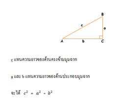

สมบัติของรูปสามเหลี่ยมมุมฉาก
นักเรียนเคยสังเกตหรือไม่ว่า ชีวิตประจำวันของเราเกี่ยวข้องกับรูปเรขาคณิตเสมอ เราใช้สมบัติของรูปเรขาคณิตในงานก่อสร้าง เช่น ใช้สมบัติของรูปสามเหลี่ยมในการประกอบโครงของบ้านหรืออาคารให้มีความแข็งแรง ใช้มุมฉากในการตั้งเสาบ้านให้ตั้งฉากกับพื้นดิน เพื่อให้บ้านแข็งแรงและรับน้ำหนักได้ดี สร้างหน้าต่างและประตูให้เป็นรูปสี่เหลี่ยมมุมฉากเพื่อความสวยงามและมองเห็นภายนอกได้กว้าง หรือสร้างไม้ค้ำประกอบเป็นรูปสามเหลี่ยมมุมฉากค้ำชายคาบ้านให้แข็งแรงมั่นคง
ต่อไปนี้นักเรียนจะได้เรียนเกี่ยวกับสมบัติที่สำคัญของรูปสามเหลี่ยมมุมฉาก อีกประการหนึ่ง คือ พิจารณารูปสามเหลี่ยมมุมฉาก ABC ที่มี AC ̂B เป็นมุมฉาก
ความสัมพันธ์ระหว่างความยาวของด้านทั้งสามของรูปสามเหลี่ยมมุมากข้างต้น เป็นไปตามสมบัติของรูปสามเหลี่ยมมุมฉากที่กล่าวว่า
สำหรับรูปสามเหลี่ยมมุมฉากใด ๆ กำลังสองของความยาวของด้านตรงข้ามมุมฉาก เท่ากับผลบวกของกำลังสองของความยาวของด้านประกอบมุมฉาก
สมบัติข้างต้นนี้เรียกว่า ทฤษฎีบทพีทาโกรัส และเชื่อกันว่า นักคณิตศาสตร์ชาวกรีกชื่อพีทาโกรัสเป็นผู้พิสูจน์ได้เป็นคนแรก
เราสามารถใช้ความสัมพันธ์ระหว่างความยาวของด้านทั้งสามของรูปสามเหลี่ยมมุมฉากดังกล่าวข้างต้น หาความยาวของด้านใดด้านหนึ่งของรูปสามเหลี่ยมมุมฉากที่ต้องการทราบได้เสมอ เมื่อทราบความยาวของด้านอีกสองด้านของรูปสามเหลี่ยมนั้น
ทฤษฎีบทพีทาโกรัส
จากหัวข้อที่แล้วทำให้ทราบถึงความสัมพันธ์ของความยาวของด้านทั้งสามของรูปสามเหลี่ยมมุมฉาก นั่นคือ กำลังสองของความยาวของด้านตรงข้ามมุมฉาก เท่ากับผลบวกของกำลังสองของความยาวของด้านประกอบมุมฉาก
ซึ่งความสัมพันธ์ดังกล่าวเป็นที่รู้จักกันมาช้านานกว่า 3,000 ปีมาแล้ว ในชื่อของทฤษฎีบทพีทาโกรัส แต่คนในสมัยนั้นสังเกตเห็นความสัมพันธ์นี้ในลักษณะที่เป็นความสัมพันธ์ของพื้นที่ของรูปสี่เหลี่ยมจัตุรัสบนด้านทั้งสามของรูปสามเหลี่ยมมุมฉาก ดังตัวอย่างต่อไปนี้
จากรูป จะได้พื้นที่ของรูปสี่เหลี่ยมจัตุรัส ABIH เท่ากับ 55 = 25
ตารางหน่วย
พื้นที่ของรูปสี่เหลี่ยมจัตุรัส BCED เท่ากับ 32 = 9 ตารางหน่วย
พื้นที่ของรูปสี่เหลี่ยมจัตุรัส ACGF เท่ากับ 42 = 16 ตารางหน่วย
ซึ่ง 25 = 9 + 16
ดังนั้น พื้นที่ของรูปสี่เหลี่ยมจัตุรัส ABIH เท่ากับ ผลบวกของพื้นที่ของรูปสี่เหลี่ยมจัตุรัส BCED และพื้นที่ของรูปสี่เหลี่ยมจัตุรัส ACGF
ตัวอย่างข้างต้นเป็นการแสดงความสัมพันธ์ตามทฤษฎีบทพีทาโกรัสที่กล่าวอีกแบบหนึ่งดังนี้
สำหรับรูปสามเหลี่ยมมุมฉากใดๆ พื้นที่ของรูปสี่เหลี่ยมจัตุรัสบนด้านตรงข้ามมุมฉาก
เท่ากับผลบวกของพื้นที่ของรูปสี่เหลี่ยมจัตุรัสบนด้านประกอบมุมฉาก
บทกลับของทฤษฎีบทพีทาโกรัส
ในสมัยอียิปต์โบราณ เกษตรกรที่อาศัยอยู่ริมฝั่งแม่น้ำไนล์มักประสบปัญหาน้ำท่วมที่ดินจนไม่สามารถชี้แนวเขตที่ดินของตนได้ จึงต้องรังวัดที่ดินใหม่เกือบทุกปี ในสมัยนั้นเมื่อต้องการรังวัดที่ดินให้เป็นมุมฉาก ชาวบ้านจะใช้เชือกที่มี 13 ปม ระยะห่างระหว่างปมเป็น 1 หน่วยเท่ากัน มาขึงเป็นรูปสามเหลี่ยมที่มีด้านยาวเป็น 3 ,4 และ 5 หน่วย ก็จะได้รูปสามเหลี่ยมมุมฉากที่มีด้านตรงข้ามมุมฉากเป็น 5 หน่วย
แม้แต่ในปัจจุบันถ้าช่างรังวัดไม่มีเครื่องมือวัดมุมฉาก เขาจะใช้เชือก 13 ปม มาขึงสร้างมุมฉาก วิธีดังกล่าวนี้ชี้ให้เห็นว่าช่างรังวัดทราบว่ารูปสามเหลี่ยมที่มีความยาวของด้านทั้งสามเป็น 3, 4 และ 5 หน่วย จะต้องเป็นรูปสามเหลี่ยมมุมฉาก
ถ้ารูปสามเหลี่ยม ABC มีด้านยาว a, b และ c หน่วย และ c2 = a2 + b2 จะได้ว่า ∆ABC เป็นรูปสามเหลี่ยมมุมฉาก และมีด้านที่ยาว c หน่วย เป็นด้านตรงข้ามมุมฉาก
คำกล่าวข้างต้นเป็นจริงตามบทกลับทฤษฎีบทพีทาโกรัส ที่กล่าวว่า
สำหรับรูปสามเหลี่ยมมุมฉากใดๆ ถ้ากำลังสองของความยาวของด้านด้านหนึ่งเท่ากับผลบวกของกำลังสองของความยาวของด้านอีกสองด้าน แล้วรูปสามเหลี่ยมนั้นเป็นรูปสามเหลี่ยมมุมฉาก
บทกลับของทฤษฎีบทพีทาโกรัสเป็นการนำผลของทฤษฎีบทพีทาโกรัสมาเป็นเหตุ และนำเหตุมาเป็นผลซึ่งอธิบายได้ดังนี้
ทฤษฎีบทพีทาโกรัสมีเหตุและผลดังนี้
เหตุ : มีรูปสามเหลี่ยมรูปหนึ่ง เป็นรูปสามเหลี่ยมมุมฉาก
ผล : กำลังสองของความยาวของด้านตรงข้ามมุมฉาก เท่ากับผลบวกของกำลังสองของความยาวของด้าน
ประกอบมุมฉากของรูปสามเหลี่ยม